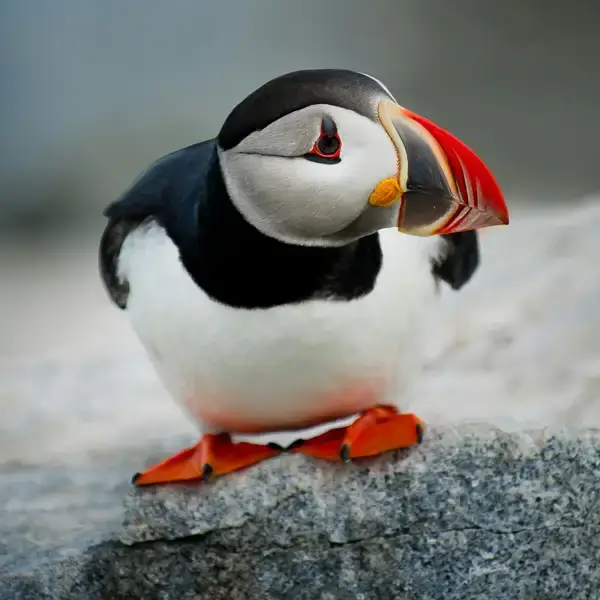

Puffins are any of three species of small alcids (auks) in the bird genus Fratercula. These are pelagic seabirds that feed primarily by diving in the water. They breed in large colonies on coastal cliffs or offshore islands, nesting in crevices among rocks or in burrows in the soil. Two species, the tufted puffin and horned puffin, are found in the North Pacific Ocean, while the Atlantic puffin is found in the North Atlantic Ocean.